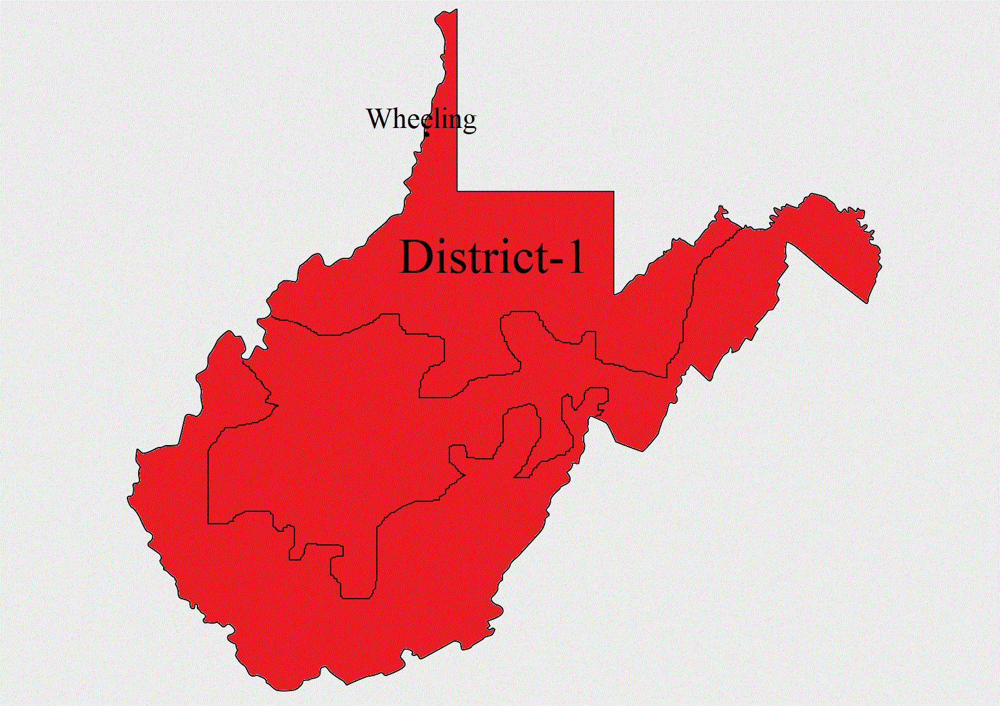
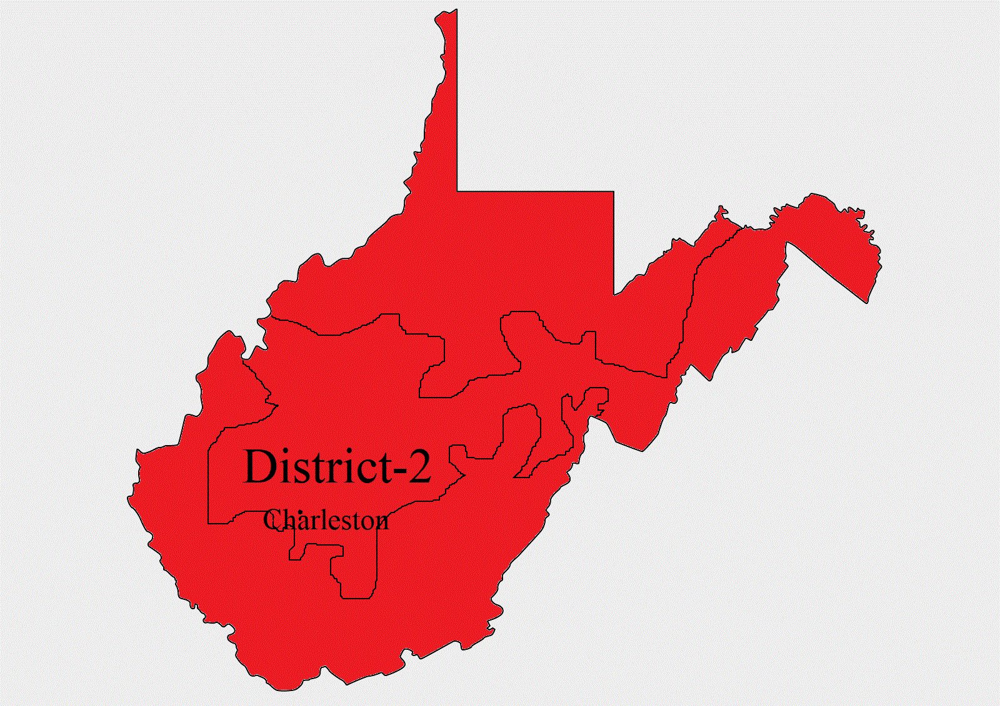
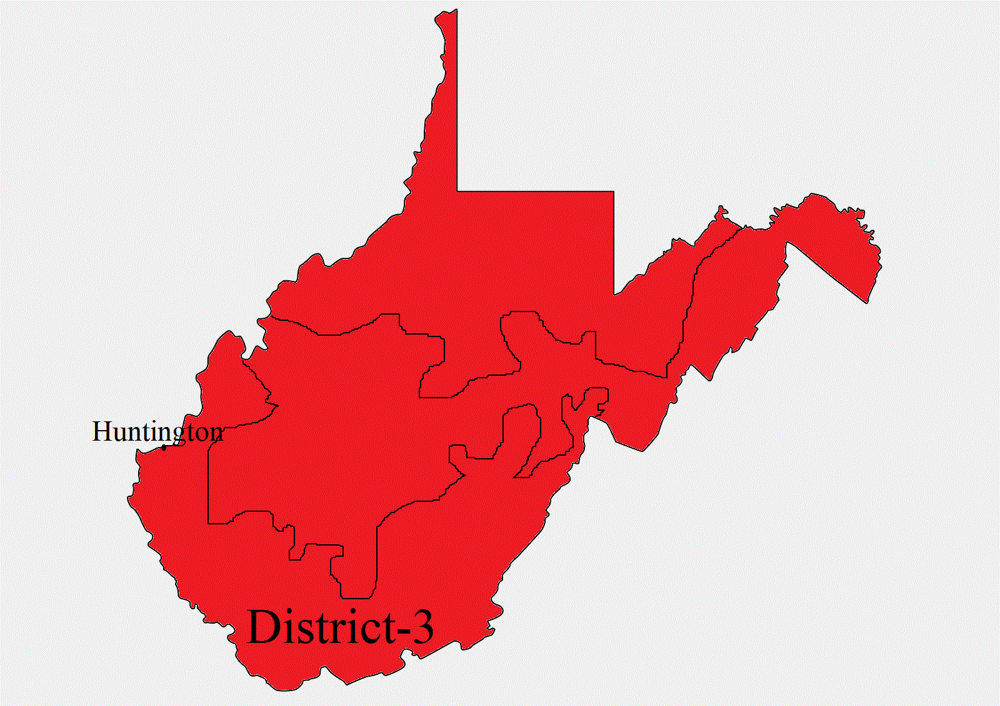

One Senate seat is up for election in West Virginia, held by a Democrat incumbent.
Voters will also choose representatives for three House seats, two of which are held by Republicans.
(One seat is vacant, most recently held by a Republican.)
See West Virginia’s primary results.
Sen. Joe Manchin III (D) will face state Attorney General Patrick Morrisey (R)
in one of the country’s most conservative states — Donald Trump won there by 42 points.
Manchin has been more willing than most Democrats to work with Trump, backing both of his
Supreme Court picks. The bipartisan brand he emphasized during the campaign could be enough
to secure Manchin's reelection. Morrisey fended off two challengers in the primary, but
some Republicans think he has proved a lackluster candidate.
How each House district leans politically.
Going into this election, West Virginia had 2 Republican representatives,
with 1 seat currently open. Here’s how each district leans politically, based
on how it voted in the 2016 presidential election, with 2018 results as they come in.
In 2016, Trump won this district by 41.6 points and David McKinley (R) won by 37.9.

| Candidates | Votes | Pct. |
|---|
| David McKinley* (R) | 128,725 | 64.6% |
| Kendra Fershee (D) | 70,402 | 35.4% |
| Total Votes | 199,127 |
| CANDIDATE 1 | RESULTS 1 | CANDIDATE 2 | RESULTS 2 | WINNER | David McKinley* (R) |
|---|
In 2016, Trump won this district by 36.4 points and Alex Mooney (R) won by 16.4.

| Candidates | Votes | Pct. |
|---|
| Alex Mooney* (R) | 109,018 | 54.0% |
| Talley Sergent (D) | 86,678 | 42.9% |
| Daniel Lutz (I) | 6,213 | 3.1% |
| Total Votes | 201,909 |
| CANDIDATE 1 | RESULTS 1 | CANDIDATE 2 | RESULTS 2 | CANDIDATE 3 | RESULTS 3 | WINNER | Alex Mooney* (R) |
|---|
In 2016, Trump won this district by 49.3 points and Evan Jenkins (R) won by 43.9.

| Candidates | Votes | Pct. |
|---|
| Carol Miller (R) | 98,048 | 56.4% |
| Richard Ojeda (D) | 75,776 | 43.6% |
| Total Votes | 173,824 |
| CANDIDATE 1 | RESULTS 1 | CANDIDATE 2 | RESULTS 2 | WINNER | Carol Miller (R) |
|---|